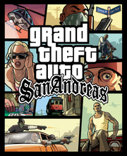

 |
|
| Tiempo de juego | No Jugado |
| Última actividad | Nunca |
| Añadido | 26/10/2025 13:52:40 |
| Modificado | 27/10/2025 1:28:04 |
| Estado de finalización | Not Played |
| Librería | Playnite |
| Fuente | 2TB DATOS |
| Plataforma | Android Fire OS iOS Macintosh Microsoft Xbox Microsoft Xbox 360 PC (Windows) Sony PlayStation 2 Sony PlayStation 3 Windows Phone |
| Fecha de lanzamiento | 26/10/2004 |
| Puntuación de la Comunidad | |
| Puntuación de la Crítica | 95 |
| Puntuación de usuario | |
| Género | Action-adventure |
| Desarrollador | Rockstar North |
| Editor | Rockstar Games |
| Característica | Multiplayer Single-player |
| Enlaces | Wikipedia Official website |
| Tag | [Game Engine] RenderWare [People] artist: Aaron Garbut [People] composer: Michael Hunter [People] producer: Leslie Benzies [People] programmer: Adam Fowler [People] programmer: Obbe Vermeij [People] writer: Dan Houser [People] writer: DJ Pooh [People] writer: James Worrall |
Grand Theft Auto: San Andreas is a 2004 action-adventure game developed by Rockstar North and published by Rockstar Games. It is the fifth main game in the Grand Theft Auto series, following 2002's Grand Theft Auto: Vice City, and the seventh entry overall. Set within the fictional U.S. state of San Andreas, the game follows Carl "CJ" Johnson, who returns home in 1992 after his mother's murder and finds his old street gang has lost much of their territory. Over the course of the game, he attempts to rebuild the gang, clashes with corrupt authorities and powerful criminals, and gradually unravels the truth behind his mother's murder.
The game is played from a third-person perspective and its world is navigated on foot or by vehicle. The open world design lets the player freely roam San Andreas, consisting of three major metropolitan cities: Los Santos, San Fierro, and Las Venturas, based on Los Angeles, San Francisco, and Las Vegas, respectively. Rockstar conducted on-site research in each city and consulted Los Angeles natives DJ Pooh, Estevan Oriol, and Mister Cartoon for help imitating the city's culture. The narrative is based on multiple real-life events in Los Angeles, including the Bloods and Crips street gang rivalry, the 1990s crack epidemic, the 1992 Los Angeles riots, and the Rampart scandal. The 75-person development team spent nearly two years creating the game. San Andreas was released in October 2004 for the PlayStation 2.
The game received critical acclaim for its characters, narrative, open world design, and visual fidelity, but mixed responses towards its mission design, technical issues, and portrayal of race. It generated controversy when the hidden "Hot Coffee" sex minigame was discovered, briefly requiring the game to be re-rated Adults Only. San Andreas received year-end accolades from several gaming publications, and it is considered one of the sixth generation of console gaming's most significant titles and among the best video games ever made. It was released for Windows and the Xbox in 2005, followed by enhanced versions and mobile ports in the 2010s, and a remastered version in 2021. San Andreas is the best-selling PlayStation 2 game with over 17.3 million copies sold, and one of the best-selling games of all time with 27.5 million copies sold overall. Its successor, Grand Theft Auto IV, was released in April 2008.
Grand Theft Auto: San Andreas is an action-adventure game played from a third-person view. In the game, players control criminal Carl "CJ" Johnson and complete missions—linear scenarios with set objectives—to progress through the story. Outside of missions, players can freely roam the game's open world and complete optional side missions. A multiplayer mode allows two players to roam the world. The fictional state of San Andreas, which makes up the open world, comprises three metropolitan cities: Los Santos, San Fierro, and Las Venturas. The cities are unlocked as the story progresses; airports allow teleportation between each city using fast travel.: 1 Scattered throughout the map, safehouses can be purchased to save the game and store vehicles.: 20
Players may run, swim, and use vehicles to navigate the world, and use melee attacks, firearms and explosives to fight enemies, including the ability to dual wield firearms and commit drive-by shootings. Weapons are purchased from local firearms dealers, retrieved from dead enemies, and found scattered through the world. In combat, auto-aim is used to lock on to targets.: 42 Should players take damage, their health meter can be fully regenerated through health pick-ups, and body armour can be used to absorb gunshots and explosive damage. Players respawn at hospitals when their health depletes.: 100 If players commit crimes, law enforcement may respond as indicated by a "wanted" meter in the head-up display. Stars displayed on the meter indicate the current wanted level; at the maximum six-star level, police helicopters and military are sent after players.: 1 Officers will search for players who leave the wanted vicinity. The meter enters a cool-down mode and eventually recedes when players are hidden from the officers' line of sight.: 29 The game features more than 180 vehicles, including cars, motorcycles, aircraft, boats, and remote-control vehicles,: 6–11 and most can be accessorised with modifications like hydraulics, nitrous oxide engines, and stereo systems.: 201–204
In the world, players can fight for territory by attacking rival gang members; the territory is won when players survive three waves of responding enemy attacks. Won territories are subject to periodic enemy gang attacks—they must be successfully defended or else lost.: 196 While free roaming the world, players may engage in activities such as burglary, fire fighting, pimping, taxi, and vigilante missions;: 176–180 completion rewards players with cash, which can be spent on CJ's accessories, clothing, hairstyles, and tattoos—new role-playing elements for the series. Balancing food and physical activity impacts CJ's appearance and physical attributes; eating and exercising maintains health, while losing muscle lessens combat effectiveness. Three styles of hand-to-hand combat—boxing, kickboxing, and mixed martial arts—are taught at gyms in each city.: 144–145 : 31 The game tracks respect among CJ's friends, which varies according to his actions and appearance.: 1 Acquired skills are also tracked, such as driving, firearms handling, lung capacity, muscles, and stamina, which unlock additional game mechanics.: 4 Players can date six different girls and take them to dinner, drinks, or dancing.: 200–201
In 1992, after five years in Liberty City, gangster Carl "CJ" Johnson (Young Maylay) returns to Los Santos following his mother's death in a drive-by shooting. He is intercepted by corrupt C.R.A.S.H. officers led by Frank Tenpenny (Samuel L. Jackson), who threaten to implicate CJ in the killing of a fellow police officer unless he co-operates with them. CJ returns to Grove Street and reunites with his brother Sean "Sweet" Johnson (Faizon Love), sister Kendl Johnson (Yolanda Whittaker), and members of his old gang, Big Smoke (Clifton Powell) and Ryder (MC Eiht). Discovering the Grove Street Families (GSF) have lost much of their territory, CJ restores the gang to power by helping reunite the various GSF sets who had splintered and allying himself with Cesar Vialpando (Clifton Collins Jr.)—Kendl's boyfriend and leader of the Varrios Los Aztecas gang. CJ and Cesar witness Smoke and Ryder meeting with Tenpenny and the rival Ballas gang, and discover they betrayed the GSF and were responsible for killing CJ's mother. Suspecting a set-up, CJ rushes to Sweet's aid in a showdown against the Ballas.
Sweet gets wounded in the ambush and imprisoned, while Tenpenny exiles CJ to the countryside, where he forces him to eliminate witnesses to C.R.A.S.H.'s corruption in exchange for Sweet's safety in prison. CJ befriends an ageing hippie and marijuana farmer named "the Truth" (Peter Fonda) and Triad leader Wu Zi Mu (James Yaegashi). He participates in a street race and wins a garage in San Fierro, which he sets up to earn money, and crosses paths with the Loco Syndicate, Big Smoke and Ryder's drug connection. Infiltrating the organisation, he identifies its leader: the affable but mysterious Mike Toreno (James Woods). Alongside Cesar and the Triad, CJ destroys the Loco Syndicate's drug factory, killing Ryder and the other leaders except Toreno, who reveals himself an undercover agent. He enlists CJ's help in several shady operations in exchange for Sweet's release from prison. Meanwhile in Las Venturas, CJ and Wu Zi Mu establish a casino and clash with the Mafia.
After his release, Sweet and CJ revive the GSF, drive off the rival gangs from their territory, and rebuild throughout Los Santos. Tenpenny is arrested and tried for several felonies, but the charges are dropped due to lack of witnesses, prompting a city-wide riot. CJ soon discovers Big Smoke's hideout. The two engage in a gunfight; CJ wins, and before dying, Smoke confesses that he got caught up in money and power. Tenpenny arrives, holds CJ at gunpoint, steals Smoke's drug money, and escapes after causing an explosion in the building. He drives off in a fire truck, followed by CJ and Sweet, but eventually loses control and crashes over the side of a bridge overlooking Grove Street. CJ and his friends watch as Tenpenny dies of his injuries, ending the riot. In the aftermath, CJ's family and friends celebrate their success at the Johnson house. In the midst of the celebrations, CJ leaves to check on the neighbourhood.
Rockstar North began development of San Andreas following the release of Grand Theft Auto: Vice City in October 2002. The 50-person team grew to 75 as the developers from Manhunt (2003) joined San Andreas, while the New York team consisted of around 15 members; the testing department grew from 60 to 100. Having two years of development, as opposed to Vice City's one, gave the team more opportunities to experiment and reevaluate the previous Grand Theft Auto games. Producer Leslie Benzies hoped San Andreas would redefine the series and "revolutionize open-ended gameplay and video game production values". Rockstar Games's The Warriors was delayed from 2004 to 2005 to provide additional resources to San Andreas. San Andreas had a budget of under US$10 million.
Rockstar North's minimal turnover since the development of the series's first game, Grand Theft Auto (1997), allowed the team to leverage their experience with the series.: 57 Some developers were concerned about working conditions at Rockstar during San Andreas's development, as they were unable to take an adequate break after Vice City. Programmer Gary Foreman feared the company had entered a "constant crunch", as some developers worked for 17 hours per day.: 138 Some stepped away after disagreements with Rockstar president Sam Houser about working conditions,: 139–141, 160 and one veteran employee quit in objection to the portrayal of African Americans and what he perceived to be a gloomier and more exploitative tone in Rockstar's output, particularly San Andreas and Manhunt.: 167
San Andreas's world was originally envisioned as three separate maps connected by public transport; it later became three cities in one map, with countryside and desert in between. Its cities are inspired by real locations: Los Santos by Los Angeles, San Fierro by San Francisco, and Las Venturas by Las Vegas.: 44 Early in development, the team travelled to each city for research and photography;: 61 : 40 art director Aaron Garbut felt Los Angeles's gang territory in particular was difficult to capture without first-hand experience. Rockstar's New York-based research team took thousands of photographs and video,: 61 some of which were used as textures in the game. San Andreas's world is 36 square kilometres (14 sq mi), about four to six times larger than Grand Theft Auto III's and Vice City's;: 44 each city in San Andreas is approximately as large as Vice City. Garbut found it more difficult to memorise San Andreas's larger map than its predecessors'.: 61 The team wanted all elements—including packaging and marketing—to maintain a consistent theme to ensure players felt they were connected.: 47
Benzies felt Rockstar North's relationship with Los Angeles natives Estevan Oriol, Mister Cartoon, and DJ Pooh helped them imitate the city's 1990s street culture.: 40 The team wanted to ensure the world looked neither too "toy-towny" nor too precise, as they sought "depth" over quantitative size; Garbut wanted players to "feel like [they] can stop at any point and discover new things". Real-world areas were the inspiration for many in-game locations: Compton for Los Santos's urban areas, and the Golden Gate Bridge for the Gant Bridge. The team were enthusiastic about the inclusion of mountains, forests, and a desert—firsts for the series. San Fierro's hills, based on those in San Francisco, were intended to draw the player's focus towards vehicle gameplay,: 45 and the open countryside driving was inspired from a technical perspective by Rockstar's Smuggler's Run (2002).: 42 Producer and co-writer Dan Houser felt the game's return to Los Santos in the final act afforded players a chance to view it from a different perspective.: 122 Garbut established climate zones for each city represented by their sky colour: Los Santos's red-orange, San Fierro's blue, and Las Venturas's red.
San Andreas was built using the game engine RenderWare.: 74 Its render pipeline was rewritten for increased graphical detail and scope, allowing 35–50% more polygons on screen,: 74 real-time reflections and volumetric lighting, and unique models and lighting sets for day and night,: 45 including full shadows for stealth sequences.: 24 According to Garbut, the world is built with around 16,000 unique objects and buildings.: 61 Several buildings share a single low-detail model, allowing them to be loaded as players traverse the map without the interruption of loading screens like in Vice City.: 122 Textures were created at a high resolution and scaled down for platforms unable to handle them. The driving physics were reworked from previous games in consideration of San Andreas's more open areas. Manhunt inspired San Andreas's stealth elements,: 49 and the "physicality" of Manhunt's targeting and gun gameplay was adapted to the open world formula. Computer scripting advancements enabled the developers to create gameplay features not possible in their previous games, such as the casino minigames. The game's action sequences were crafted as an extension of the team's favourite moments of Vice City.
Several historical events influenced the narrative, including the Rampart scandal of the Los Angeles Police Department, the 1990s crack epidemic, the 1992 Los Angeles riots, and the rivalry between the Bloods and Crips street gangs. Sam Houser recounted being fascinated by the appearances of street gangs and terrified by their behaviour; the writers sought to accurately portray gang violence without glorifying it,: 54 and wanted each gang to act differently, signified by unique walking styles. DJ Pooh was hired to co-write the game from an American perspective.: 189 The narrative was influenced by Hollywood films; Dan Houser said the team watched "hundreds of movies to get the California vibe". The developers referenced Boyz n the Hood (1991), Colors (1988), and Menace II Society (1993) for narrative inspiration, and compared their in-game locations to those in different films: the countryside to Deliverance (1972), San Fierro to Bullitt (1968), and Las Venturas to Casino (1995).: 77 Journalists identified references to other films like Juice (1992) and New Jack City (1991). The focus on several communities was prompted by the variety in West Coast culture in the 1990s.
While the stories are largely unconnected, San Andreas concluded a trilogy that started with Grand Theft Auto III, allowing Rockstar to explore the 1980s (Vice City), 1990s (San Andreas), and early 2000s (III). The team wanted the games to be loosely connected, avoiding an "ultimate bad guy"; Dan Houser enjoyed San Andreas's inclusion of III's antagonist Catalina as the character became more sympathetic. The team felt "the world's attention was on California" in the 1990s in regards to news and music, and that it translated well to the game;: 77 they considered other time periods, like the 1930s to 50s, but found them incongruous with the series.: 108 Dan Houser said the game's satire was aimed towards the "broader weirdness" of American consumerism and action movies. He noted the writers attempted to outdo each other's humour. The team wanted to give players the freedom to make choices while maintaining interest in the story. The game features over 400 speaking actors and over 60,000 lines of dialogue, including over 7,700 for CJ; it broke a Guinness World Record for the largest video game voice cast with 861 credited actors. Recording took place over roughly five months. Each non-player character had around an hour of dialogue, in contrast to Vice City's ten minutes.: 71
Sam Houser sought an unknown actor for CJ, as he found Ray Liotta's performance as Tommy Vercetti in Vice City "conflicting" due to his familiarity with Liotta's previous work. He opted to cast celebrities in secondary roles, such as Jackson as Tenpenny, and he felt Young Maylay's obscurity in the industry made CJ feel "very, very human". Rockstar asked Young Maylay to audition after overhearing him speak with DJ Pooh; he was cast in the role—his first acting performance—a few weeks after auditioning.: 41 He felt the developers gave him the freedom to imbue CJ with his own personality. They aimed for CJ to be their "most human" character, ensuring he had "the most intense story around him" to allow players to identify.: 54 DJ Pooh compared CJ to Tupac Shakur in his fierce dedication to family but ability to become "cold-blooded" when necessary.: 49 The team felt the ability to adjust CJ's weight helped players feel their actions could have consequences. Dan Houser felt CJ's customisability allowed players to better connect with the characters.: 50 DJ Pooh engaged several other actors to work on the game, such as Faizon Love, MC Eiht, and Shawn Fonteno.
Rockstar partnered with Interscope Records to create the soundtrack. The in-game radio features eleven radio stations with twenty DJs—including Axl Rose, Chuck D, and George Clinton—and more than three times as many licensed songs and original in-universe advertisements as Grand Theft Auto III. The radio features were overhauled; instead of looping sounds, each station became dynamic, allowing a randomised song order, accurate weather predictions, and story-relevant news announcements. Michael Hunter wrote the game's main theme, partly inspired by his childhood experiences with hip hop through Yo! MTV Raps (1988–1995). Interscope published two albums for the game: a two-disc album in November 2004, and an eight-disc box set in December. Post-PlayStation 2 versions of the game added an additional radio station supporting a custom, user-imported soundtrack.
In October 2003, Rockstar's parent company Take-Two Interactive announced the next Grand Theft Auto game would be released in 2004's third quarter, and it prompted speculation after registering GTA: San Andreas with the U.S. Patent and Trademark Office in December 2003. Rockstar announced the game in March 2004, along with a scheduled release date of 19 and 22 October in North America and Europe, respectively. The first details and screenshots were released at E3 in May alongside a cover story in Game Informer, followed by the cover art in July. Rockstar launched the official website and first trailer in August, followed by the second trailer in September. In September, Take-Two announced the game's delay to 26 and 29 October in North America and Europe, respectively, and revealed it would be released for Windows in early 2005. Rockstar commissioned hand-painted advertisements for San Andreas around the world in late 2004; one in Melbourne remained partially visible in 2020.
In October 2004, an early version of the game was leaked by hackers; Rockstar asserted it would "aggressively pursue this matter" and asked for information. The game was released for the PlayStation 2 in October 2004. A special edition version was published for the PlayStation 2 on 8 October 2005, featuring Rockstar's debut documentary film Sunday Driver, about a lowrider car club in Compton. It also included .mw-parser-output .vanchor>:target~.vanchor-text{background-color:#b1d2ff}@media screen{html.skin-theme-clientpref-night .mw-parser-output .vanchor>:target~.vanchor-text{background-color:#0f4dc9}}@media screen and (prefers-color-scheme:dark){html.skin-theme-clientpref-os .mw-parser-output .vanchor>:target~.vanchor-text{background-color:#0f4dc9}}The Introduction, an in-engine video previously provided on a DVD with the game's soundtrack. The 21-minute video chronicles the events leading up to San Andreas, featuring CJ, Sweet, Big Smoke, Ryder, and Tenpenny. GameSpot recommended the film for fans of the series; IGN's Chris Carle enjoyed the voice acting but found the narrative uncompelling and felt the film alone was not worth purchasing the special edition. Capcom published the game in Japan on 25 January 2007.
Grand Theft Auto: San Andreas received "universal acclaim" from critics, according to review aggregator Metacritic. It is the site's fifth-highest-rated PlayStation 2 game. PSM2's Daniel Dawkins declared it "the single most complete, unique, universe in console history" after The Legend of Zelda: Ocarina of Time (1998) and "the best entertainment console gaming can offer". Game Informer's Andrew Reiner called it "entertainment at its best" and GameSpy's Miguel Lopez wrote it reminded him why he plays games: "to be liberated from the constraints of reality, and explore living, breathing worlds".
Several reviewers considered San Andreas's world an improvement over its predecessors', praising the attention to detail in its areas and characters; IGN's Jeremy Dunham cited the differences in each city's weather as a highlight. 1Up.com's Jeremy Parish considered it "the most complete, complex and detailed environment ever crafted for a game", praising the complexities of the freeway system and social dynamics. GameSpy's Lopez lauded its accurate imitation of the American West Coast. Critics considered the graphics an improvement over Vice City, particularly regarding the animations, foliage, lighting, and weather effects; PALGN's Chris Sell called it "one of the most visually absorbing games ever". Criticism was directed at the game's technical issues, with several reviewers encountering pop-up, and unstable frame rates; some felt the game pushed the PlayStation 2 hardware to its limit.
Game Informer's Reiner considered gameplay a dramatic improvement over previous entries. PSM2's Dawkins found the missions were rarely repetitive and blended difficulty with comedy. GameRevolution's Joe Dodson lauded the freedom provided to players, while 1Up.com's Parish felt the previous games' improvisation had been removed and Electronic Gaming Monthly's Dan Hsu thought it could have benefited from branching paths. The New York Times's Charles Herold found the game's structure diminished enjoyment of its missions, forcing players to drive long distances and replay extensive sequences upon failing, a complaint echoed by others. Some reviewers criticised the combat targeting (though acknowledged the usefulness of auto-aim) and the flight, racing, RC car, and minigame controls. The addition of role-playing elements was praised for its simplicity, subtlety, and effectiveness, though 1Up.com's Parish denounced some missions' statistical prerequisites.
Several critics considered the narrative the series's best to date, which Eurogamer's Kristan Reed attributed to its focus on dialogue and scene-setting, both in and out of cutscenes. Game Informer's Matt Miller enjoyed the narrative's ridicule of modern culture. Some reviewers compared the story to Hollywood films and similar popular culture; PSM2's Dawkins felt the finale "outstrips the collected work" of filmmakers Jerry Bruckheimer and Don Simpson. Critics praised the cast's performances, particularly that of Young Maylay, Samuel L. Jackson, James Woods, and David Cross. Official U.S. PlayStation Magazine's John Davison considered CJ "possibly one of the most well-developed and believable videogame characters ever made" due to his layered personality and realistic behaviour; 1Up.com's Parish concurred but felt CJ's kind nature made his in-game actions less believable, a problem that may have been circumvented through a branching narrative.
Some critics and scholars criticised the game for perpetuating racial stereotypes. Seeing Black's Esther Iverem condemned the series for "validating ... an accepted caricature" rather than teaching respect and tolerance. Dean Chan felt the series's protagonist shift from Tommy (an Italian American) to CJ (an African American) without subverting archetypes made it "complicit in the pathologization and fetishization of race".: 25 Paul Barrett found its disregard and decontextualisation of institutional racism's structures suggest "that the problems that African Americans experience is due to individual failure", reinforced by the concept that white players can simply experience "black identity".: 114 A Games and Culture study found youth groups "do not passively receive the games' images and content": white players expressed concern about its racial stereotypes, while African American players used it "as a framework to discuss institutional racism".: 264, 279 Rachael Hutchinson considered San Andreas "a critical reflection on racial conflict in America" and found several criticisms were based on limited viewings instead of the whole story.: 174–175 Kotaku opined some in-game interactions could be portrayed as a lack of racism, such as characters conversing without moderating vocabularies or commenting on others'. 1Up.com's Parish lauded the references to Rodney King's assault and the sophisticated writing addressing race in South Central Los Angeles. David J. Leonard felt politicians and legislators were more concerned about the game's violent and sexual content than its racial stereotypes.: 268
San Andreas's June 2005 release for Windows and Xbox received "universal acclaim" according to Metacritic. It was the second-highest-rated Windows game of 2005, behind Civilization IV, and the third-highest-rated Xbox game, behind Ninja Gaiden Black and Tom Clancy's Splinter Cell: Chaos Theory.
PALGN's Matt Keller considered the Windows release the best version of the game. Reviewers lauded the improved graphics, particularly the detailed textures and models, higher draw distance, and improved frame rate, loading times, and anti-aliasing, though some considered the graphics outdated for the platform. PALGN's Keller found the increased population density improved the world's overall atmosphere. The mouse and keyboard controls were generally praised as an improvement over the console versions and the series's previous Windows ports, especially during combat gameplay, though responses to driving controls and keyboard mapping were mixed. Praise was directed at the custom radio and physical packaging and manual. Some critics bemoaned the lack of changes to the mission structure, and some encountered technical difficulties like sudden and major lagging spikes.
GameZone's Eduardo Zacarias called the Xbox release the "definitive version of the game", and GameSpy's Will Tuttle considered it better than the original. Several reviewers praised the improved assets, reflections, shadows, and load times, as well as the addition of a custom radio station and video replay mode, though GameSpy's Tuttle felt the latter was pointless without the ability to save videos. Some critics thought the controls had not been improved since the original, and others considered it a downgrade, though GameSpot's Jeff Gerstmann appreciated the Xbox controller's analogue triggers when driving. Some technical problems occasionally persisted, including pop-up, inconsistent frame rates, and poor aliasing, and some reviewers bemoaned the lack of significant graphical improvements.
San Andreas's mobile version received "generally favorable" reviews according to Metacritic. TouchArcade's Eli Hodapp considered it "the best the game has ever been", while Digital Spy's Scott Nichols said it was "easily the worst way to experience" the game, only recommending that players with newer mobile hardware consider purchasing. Its US$6.99 price point was praised.
Reviewers praised the port's graphical enhancements, including increased draw distance, improved frame rates and load times, and enhanced models, reflections, shadows, and lighting, though IGN's Leif Johnson found the textures remained dated and some critics encountered technical issues like pop-up. Digital Spy's Nichols lauded the addition of mid-mission checkpoints, and TouchArcade's Hodapp found cloud saves the port's best feature. Responses to the controls were generally positive, considered an improvement over the series's previous mobile ports, though critics concurred that playing with a controller improved the experience and better imitated the original versions.
San Andreas won four of its five nominations at the Spike Video Game Awards, including Game of the Year, Best Action Game, and Best Performance by a Human Male for Jackson as Tenpenny. It received four nominations at the British Academy Games Awards and five at the Game Developers Choice Awards; according to The Guardian, the developers walked out during the latter after winning nothing. It won five awards at the Golden Joystick Awards, including Ultimate Game of the Year and Hero and Villain for CJ and Tenpenny, respectively, and received six nominations at the Interactive Achievement Awards, of which it won Outstanding Achievement in Soundtrack and Console Action/Adventure Game of the Year.
San Andreas was named 2004's best game by GamesMaster and runner-up by PSM. It won PlayStation 2 Game of the Year and Best Game Within a Game (for pool) from Electronic Gaming Monthly, Best PlayStation 2 Game, Best Action Adventure Game, Best Voice Acting, and Funniest Game from GameSpot, Best Action Game and Best Story for PlayStation 2 from IGN, and Best Replay Value and Best Voice Acting from PSM.
Grand Theft Auto: San Andreas sold 4.5 million copies in its first week, outselling Vice City by 45%. In the United States, it sold 2.06 million units within six days of release and generated US$235 million in revenue in its first week; it sold 1.5 million units in November, totalling 3.6 million sales overall. Analysts noted the game, alongside Halo 2, led the industry to an 11% annual increase instead of a 21% decrease. In the United Kingdom, it sold an estimated 677,000 copies and grossed about £24 million within two days, setting the record for the most copies sold during a weekend, and over 1 million copies and £35 million in nine days, becoming the country's fast-selling game. In Australia, it sold over 58,000 copies in its opening weekend, becoming the country's eleventh-best-selling game.
Michael Pachter of Wedbush Morgan estimated the game had earned a gross profit of around US$285 million within three months, and would generate US$400 million in worldwide sales by the year's end. San Andreas was 2004's best-selling game, with 5.1 million copies sold in the United States and over 1.75 million in the United Kingdom. It was 2005's eighth-highest-grossing game in the United States. The game topped the charts upon release in Japan, selling over 227,000 units in its first week. It was the best-selling game in the United States by April 2008, with over 8.6 million units sold, the best-selling PlayStation 2 game with 17.33 million units sold by 2009. and one of the best-selling Xbox games with 1.26 million units sold by 2007. Worldwide sales reached 12 million units by March 2005, 21.5 million by April 2008, and 27.5 million by 2011. It is among the best-selling games of all time.
The development team curtailed planned nudity and sexual content to meet the requirements for a "Mature" rating from the Entertainment Software Rating Board (ESRB); rather than removing the content, they made it inaccessible to players. Modders discovered the code on the PlayStation 2 release, and modder Patrick Wildenborg found how to enable the code after the Windows release. He released this modified code online under the name "Hot Coffee" after the euphemism used in the game, and it was downloaded over one million times within four weeks.
The discovery of "Hot Coffee" resulted in legal backlash for Rockstar and Take-Two; both remained mostly silent on the matter.: 203–208 The ESRB re-rated the game "Adults Only" after an investigation, while the game was banned in Australia until the explicit content was removed. Rockstar and Take-Two received a warning from the Federal Trade Commission for failing to disclose the extent of graphic content present, while a class action lawsuit alleged that the company had misled customers who believed the game's content fell along the lines of a "Mature" rating. As a result of "Hot Coffee", the ESRB announced fines of up to US$1 million for game developers who failed to disclose the extent of their graphic content.
Critics agreed San Andreas was among the most significant titles in the sixth generation of console gaming and among the best games ever made. Rockstar established a new narrative continuity for the series with seventh-generation consoles, focusing more on realism and details. With Grand Theft Auto IV (2008), the team focused on increasing the amount and detail of buildings, removing dead spots and irrelevant spaces to allow "a more focused experience" than San Andreas. The focus on realism and depth was continued with Grand Theft Auto V, with the development team re-designing Los Santos and excluding San Fierro and Las Venturas; Dan Houser felt that by incorporating three cities into San Andreas, the development team was limited in how effectively they could emulate Los Angeles. Garbut felt technical limitations prevented San Andreas from properly capturing Los Angeles, making it feel like a "backdrop or a game level with pedestrians randomly milling about" and effectively deeming it as a jumping-off point for the development of Grand Theft Auto V.
Several moments from the game became common internet memes, such as Big Smoke's extensive fast food order in 2016 and one of CJ's first lines—"Ah shit, here we go again"—in April 2019. An early mission, "Wrong Side of the Tracks", became notable for its difficulty; Big Smoke's dialogue upon failing the mission—"All we had to do, was follow the damn train, CJ!"—was considered an iconic catchphrase and later referenced in Grand Theft Auto V. Modders have been known to frequently insert CJ into other games, such as Dark Souls (2011), The Legend of Zelda: Breath of the Wild (2017), and Street Fighter 6 (2023).
Grand Theft Auto: San Andreas was released for Windows and the Xbox on 7 and 10 June 2005 in North America and Europe, respectively, supporting higher screen resolutions, draw distance, and more detailed textures. The Xbox version was released for the Xbox 360 on 20 October 2008 as part of Xbox Originals, and the PlayStation 2 version for the PlayStation 3 on 11 December 2012 as part of PS2 Classics. The Xbox Originals release was replaced with an enhanced version as part of the game's tenth anniversary on 26 October 2014, featuring higher resolution, enhanced draw distance, a new menu interface, and achievements; the PS2 Classics release was replaced with this enhanced version on 1 December 2015, and the PlayStation 2 version was released for the PlayStation 4 on 5 December.
San Andreas was bundled with predecessors Grand Theft Auto III and Vice City in a compilation titled Grand Theft Auto: The Trilogy, released in North America for the Xbox on 8 October 2005, PlayStation 2 on 4 December 2006, and Mac OS X on 12 November 2010. A remastered version of The Trilogy subtitled The Definitive Edition was released for the Nintendo Switch, PlayStation 4, PlayStation 5, Windows, Xbox One, and Xbox Series X/S on 11 November 2021, and for Android and iOS on 14 December 2023. Existing versions of the game were removed from digital retailers in preparation for The Definitive Edition, but later restored as a bundle on the Rockstar Store.
A mobile port of San Andreas, developed by War Drum Studios, was released for iOS devices on 12 December 2013, Android on 19 December, Windows Phone on 27 January 2014, and Fire OS on 15 May 2014. The port featured updated graphics, shadows, and character and vehicle models. In October 2021, Meta Platforms announced a virtual reality (VR) version of the game was in development for the Quest 2 by Video Games Deluxe. Following the release of the Meta Quest 3 in October 2023, players questioned the status of the VR version and some suspected it may have been quietly cancelled. Meta said the port was "on hold indefinitely" in August 2024.